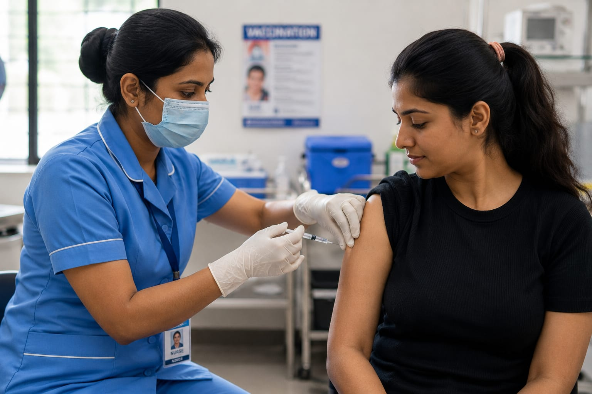

- Imagine you are admitted to a hospital with fever or an injury, nurses take care of you throughout the day
- They give medicines, check temperature and blood pressure, and assist doctors during treatment
- 👉 In simple words: Nurses care for patients and help them recover safely
Nurse
👩⚕️ What Do They Do?

🎓 How to Become a Nurse
These nursing programs help students learn patient care, basic medical procedures, emergency support, healthcare practices, and hospital management skills.
GNM (General Nursing and Midwifery)
Duration: 3 Years
Eligibility: 12th Pass (Any Stream) (Minimum 40% Marks)
Exam: State-Level Nursing Entrance Exam
BSc Nursing (Bachelor of Science in Nursing)
Duration: 4 Years
Eligibility: 12th Pass with Physics, Chemistry, and Biology (Minimum 45–50% Marks)
Exam: NEET-UG / State-Level Nursing Entrance Exams
📝 Exam Details
(Click on the exam name to see full details)
NEET-UG State-Level Nursing Entrance ExamNote: Nursing programs include classroom learning, hospital training, clinical practice, and internships to prepare students for patient care and healthcare support roles.
These advanced nursing programs help students specialize in patient care, hospital management, emergency care, nursing education, and advanced healthcare practices.
MSc Nursing (Master of Science in Nursing)
Duration: 2 Years
Eligibility: BSc Nursing / Post Basic BSc Nursing Graduate (Minimum 55% Marks)
Exam: AIIMS MSc Nursing Exam / State PG Nursing Entrance Tests
Post Basic BSc Nursing
Duration: 2 Years
Eligibility: GNM Diploma Graduate
Exam: University-Level Merit / Entrance Exam
📝 Exam Details
(Click on the exam name to see full details)
AIIMS MSc Nursing Exam State PG Nursing Entrance Tests University-Level Merit / Entrance ExamNote: Advanced nursing programs focus on specialized patient care, clinical training, healthcare leadership, and hospital-based practical experience.
Note:
(Age limits, marks, and admission process may vary depending on the college or state. These courses are available in many colleges and universities across India. You can choose colleges based on your location, budget, and entrance exams.)
🏛️ Top Colleges & Institutes for Nursing in India
(Tap on a college to view details)
After 12th (Degrees & Professional Diplomas)
All India Institute of Medical Sciences (AIIMS), New Delhi Post Graduate Institute of Medical Education and Research (PGIMER), Chandigarh Christian Medical College (CMC), Vellore National Institute of Mental Health and Neuro Sciences (NIMHANS), Bengaluru Sanjay Gandhi Postgraduate Institute of Medical Sciences (SGPGIMS), Lucknow Banaras Hindu University (BHU), Varanasi Jawaharlal Institute of Postgraduate Medical Education and Research (JIPMER), Puducherry King George's Medical University (KGMU), Lucknow Sri Ramachandra Institute of Higher Education and Research, Chennai Government College of Nursing, ThiruvananthapuramAfter Graduation (PG & Advanced Craft)
All India Institute of Medical Sciences (AIIMS), New Delhi Post Graduate Institute of Medical Education and Research (PGIMER), Chandigarh National Institute of Mental Health and Neuro Sciences (NIMHANS), Bengaluru Sanjay Gandhi Postgraduate Institute of Medical Sciences (SGPGIMS), Lucknow Jawaharlal Institute of Postgraduate Medical Education and Research (JIPMER), Puducherry King George's Medical University (KGMU), Lucknow Christian Medical College (CMC), Vellore Sri Ramachandra Institute of Higher Education and Research, Chennai Government College of Nursing, Kozhikode Government College of Nursing, ThiruvananthapuramSTEP 1
Imagine you are working as a Nurse in a hospital.
STEP 2
Patients are admitted to the hospital with different health problems.
STEP 3
You assist doctors, check patients’ blood pressure and pulse, and give injections if necessary.
STEP 4
You monitor the health condition of patients and make sure they are receiving proper care.
STEP 5
You help improve the overall health and recovery of patients through care and support.
STEP 6
If helping and caring for people like this excites you, this career may suit you.
🏥
Hospitals
Care for patients, give medicines, and assist doctors in hospitals.
🩺
Clinics
Help patients during checkups and treatments in clinics.
🏨
Health Centres
Provide healthcare support and basic treatments in health centres.
🚑
Emergency & ICU Departments
Nursing care for seriously ill and injured patients in emergency units and ICUs.
🎓
Nursing Colleges
Some nurses teach nursing students and provide practical training.
🏠
Home Healthcare Services
Nurses visit homes to care for patients and support recovery.
🪖
Military & Government Health Services
Work in defense and public healthcare departments.
✈️
Abroad Opportunities
Experienced nurses can work in countries like the UK, Canada, and Australia.
(Click Yes or No for each question)
1. Do you like helping and caring for sick people?
2. Are you interested in learning about healthcare and patient care?
3. Are you interested in checking patients and helping them recover?
4. Have you ever imagined taking care of patients in a hospital and helping them feel better?
5. Imagine a patient coming to the casualty after an accident with bleeding wounds. You clean the wounds, care for the patient, and help them recover. Does this excite you?